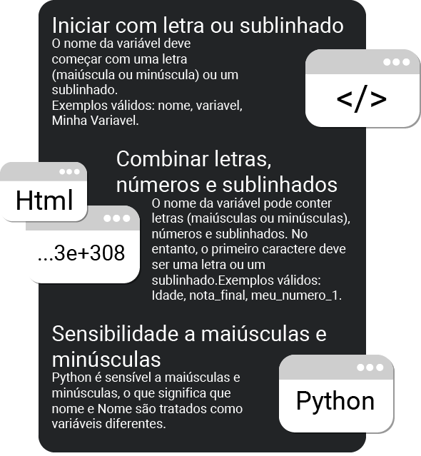
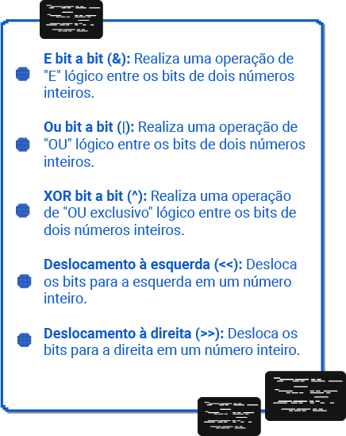

Como sugestão, configure a opção de leitura de caracteres e de pontuação de seu leitor de tela para o grau máximo de leitura, a fim de que os códigos disponibilizados neste material sejam lidos corretamente. No caso do NVDA (Nonvisual Desktop Access), para localizar a opção Grau de pontuação/símbolos, acesse Preferências – Configurações – Fala. Altere o padrão Pouco para Tudo. Dessa forma, o leitor passará a ler os segmentos de código em sua totalidade.
Python é uma linguagem de programação de alto nível, interpretada, imperativa, orientada a objetos, funcional, de script e multi-paradigma. É uma das linguagens de programação mais populares do mundo, sendo usada em uma ampla gama de aplicações, incluindo ciência de dados, aprendizado de máquina, inteligência artificial, web desenvolvimento, desenvolvimento de jogos e muito mais. Python é conhecido por sua simplicidade e legibilidade, o que o torna uma escolha ideal para programadores de todos os níveis de experiência. Ele é amplamente utilizado em uma variedade de domínios, desde desenvolvimento web e análise de dados até automação de tarefas e aprendizado de máquina. Sua ampla biblioteca padrão e uma comunidade ativa de desenvolvedores tornam possível realizar uma ampla gama de projetos de forma eficiente.
O Python tem desfrutado de um sucesso significativo e contínuo por várias razões:
A sintaxe do Python é conhecida por ser clara e legível, o que facilita a escrita e a manutenção de código. Isso torna Python uma escolha popular para programadores, especialmente iniciantes.
Python possui uma comunidade de desenvolvedores ativa e uma ampla gama de bibliotecas e frameworks que podem ser usados para diferentes tipos de projetos, como web, ciência de dados, aprendizado de máquina, automação e muito mais.
Python é uma linguagem multiplataforma, o que significa que você pode escrever código em Python e executá-lo em várias plataformas, como Windows, macOS e Linux.
Python é amplamente adotado na comunidade de ciência de dados e aprendizado de máquina devido a bibliotecas populares como NumPy, pandas, Matplotlib, scikitlearn e TensorFlow.
Python é uma linguagem de programação amigável para iniciantes. Sua sintaxe simples e clara torna mais fácil para as pessoas aprenderem programação, e sua flexibilidade permite que os desenvolvedores sejam produtivos rapidamente.
Python é uma linguagem de código aberto e é gratuito para uso. Isso significa que você pode usá-lo, modificá-lo e distribuí-lo sem custos.
Python pode ser usado em uma variedade de domínios, desde desenvolvimento web até automação, análise de dados, desenvolvimento de jogos, scripting e muito mais. Sua versatilidade torna-o uma escolha poderosa para muitos tipos de projetos.
A comunidade Python é ativa e acolhedora, tornando mais fácil obter ajuda, encontrar recursos e aprender com outros desenvolvedores.
Python possui uma documentação extensa e bem organizada, o que facilita a aprendizagem e a resolução de problemas.
Muitas empresas, incluindo gigantes da tecnologia como Google, Facebook, Netflix e Instagram, usam Python em suas operações, o que aumentou ainda mais a popularidade da linguagem.
A comunidade Python continua a aprimorar a linguagem com novas versões e recursos. Isso ajuda a manter a linguagem moderna e relevante.
Em resumo, o Python é bem-sucedido devido à sua simplicidade, versatilidade, comunidade ativa e suporte para diversas áreas, tornando-o uma escolha sólida para uma ampla variedade de projetos de desenvolvimento de software.
Para o primeiro contato com Python, é importante seguir uma abordagem estruturada para aprender os conceitos básicos da linguagem. Aqui estão as etapas que eu recomendaria:
Baixe e instale a versão mais recente do Python no site oficial (Python.org). Certifique-se de adicionar o Python ao PATH durante a instalação para facilitar o acesso a partir do terminal ou prompt de comando.
Escolha um ambiente de desenvolvimento para Python. Duas das opções populares são o IDLE (que é incluído na instalação padrão) e IDEs como o Visual Studio Code, PyCharm ou Jupyter Notebook.
Comece com o clássico "Hello World" para se familiarizar com a sintaxe básica do Python. Crie um programa simples que imprima "Hello, World!" no console.
Aprenda sobre variáveis, tipos de dados básicos (inteiros, ponto flutuante, strings, booleanos), declaração de variáveis e operações com variáveis.
Estude estruturas de controle de fluxo, como condicionais (if, else) e loops (for, while). Entenda como usar essas estruturas para controlar o fluxo do seu programa.
Introduza-se a estruturas de dados em Python, como listas, tuplas, dicionários e conjuntos. Aprenda a criar, acessar e manipular essas estruturas.
Aprenda a definir funções em Python, passar argumentos para funções e retornar valores. Compreenda a importância de funções para reutilização de código.
Explore a biblioteca padrão de Python e aprenda a importar módulos e bibliotecas para estender as funcionalidades do Python.
Estude como lidar com exceções em Python para gerenciar erros de forma elegante.
Aprenda como abrir, ler e escrever arquivos em Python, o que é útil para operações de entrada/saída.
A prática é fundamental. À medida que você aprende, crie pequenos projetos e exercícios para aplicar o que aprendeu.
Python é conhecido por sua simplicidade e legibilidade, tornando-o uma ótima escolha para iniciantes em programação. À medida que você ganha experiência, pode explorar tópicos mais avançados, como desenvolvimento web, aprendizado de máquina, análise de dados e automação. Python é uma linguagem versátil com uma grande comunidade de desenvolvedores, o que a torna uma escolha popular para uma ampla variedade de aplicativos.
Para começar com o clássico "Hello World" certifique-se de que você tenha o Python instalado em seu sistema e siga estas etapas:
Certifique-se de ter o Python instalado em seu sistema. Você pode baixá-lo em python.org e seguir as instruções de instalação.
Windows: Clique no menu Iniciar, pesquise por "IDLE" e clique no resultado correspondente.
macOS: Abra o Launchpad, pesquise por "IDLE" e clique no ícone do IDLE.
Linux: Abra um terminal e digite idle e pressione Enter.
Após abrir o IDLE, você verá a janela do interpretador (console) do Python. Para criar um programa, vá em:
Isso abrirá uma nova janela de edição.
Agora, você pode escrever seu código Python na janela de edição. Por exemplo, você pode escrever um programa "Hello, World!" simples:
print("Hello, World!")
Depois de escrever seu programa, vá em:
Agora que seu programa está salvo, você pode executá-lo. Vá em:
O resultado do seu programa será exibido na janela do IDLE (Console). Assim, você criou e executou seu primeiro programa Python no IDLE. A partir daqui você pode continuar escrevendo programas mais complexos e explorar a linguagem Python em detalhes.
Qualquer informação a ser processada em um computador por um programa necessita ser previamente armazenada na memória. Conseguimos executar essa ação quando usamos variáveis. Uma variável é uma região de memória, previamente identificada por um rótulo (nome), que tem por finalidade armazenar os dados de um programa temporariamente. Cada variável armazena apenas um valor por vez, e esse valor é um elemento qualificado a partir de um dos tipos de dados da linguagem.
O nome de uma variável é usado para sua identificação e posterior manipulação dentro do programa. Para usar variáveis, precisamos considerar algumas regras quanto aos nomes que podemos definir:
O nome da variável deve começar com uma letra (maiúscula ou minúscula) ou um sublinhado. Exemplos válidos: nome, variavel, Minha Variavel.
O nome da variável pode conter letras (maiúsculas ou minúsculas), números e sublinhados. No entanto, o primeiro caractere deve ser uma letra ou um sublinhado.Exemplos válidos: Idade, nota_final, meu_numero_1.
Python é sensível a maiúsculas e minúsculas, o que significa que nome e Nome são tratados como variáveis diferentes.
Além das regras básicas, existem algumas convenções amplamente seguidas na comunidade Python para dar nomes a variáveis:
Use nomes descritivos que indiquem o propósito da variável. Isso torna o código mais legível. Exemplo:
nome_completo = "João Silva" # Em vez de 'nc' ou 'n'.
Para nomes compostos por várias palavras, é comum usar letras minúsculas com sublinhados para separar as palavras. Exemplo:
data_de_nascimento = "2000-01-01"
Evite usar palavras reservadas do Python (como if, while, for, class, def, etc.) como nomes de variáveis.
Para variáveis que são consideradas constantes (ou seja, cujo valor não deve ser alterado), é comum usar letras maiúsculas com sublinhados. Exemplo:
PI = 3.14159
Evite dar a variáveis nomes muito genéricos, como x, a menos que seja apropriado no contexto. Exemplo (desencorajado):
x = 10
O guia de estilo PEP 8 é uma referência importante para convenções de estilo em Python. Ele sugere práticas de nomenclatura e formatação de código que são amplamente seguidas na comunidade Python.
Seguir essas regras e convenções torna o seu código mais legível e facilita a colaboração com outros programadores. Mantenha a consistência na nomenclatura de variáveis para criar código claro e de fácil manutenção.
Python suporta uma variedade de tipos de dados que podem ser armazenados em variáveis. Aqui estão alguns dos tipos de dados mais comuns em Python:
Inteiros (int): Representam números inteiros, positivos ou negativos, sem parte decimal. Exemplos:
idade = 30
populacao = 7000000000
Números de Ponto Flutuante (float): Representam números com parte decimal. Exemplos:
altura = = 1.75
salario = 2500.50
Strings (str): São sequências de caracteres que representam texto. Strings são definidas com aspas simples ('), aspas duplas ("), ou até mesmo aspas triplas (''' ou """). Exemplos:
nome = “Alice”
mensagem = ‘Olá, mundo!’
Booleanos (bool): Representam valores lógicos True (verdadeiro) ou False (falso). Exemplos:
tem_cafe = True
tem_chuva = False
Listas (list): São coleções ordenadas de valores que podem ser de diferentes tipos. As listas são definidas usando colchetes [].Exemplo:
números = [1, 2, 3, 4, 5]
nomes = ["Alice", "Bob", "Charlie"]
Tuplas (tuple): São semelhantes às listas, mas são imutáveis, ou seja, seus elementos não podem ser alterados após a criação. As tuplas são definidas usando parênteses (). Exemplo:
coordenadas = (3.14, 2.71) dias_da_semana = ("Segunda", "Terça", "Quarta", "Quinta", "Sexta")
Dicionários (dict): São coleções não ordenadas de pares chave-valor. Cada valor é acessado por meio de sua chave. Os dicionários são definidos usando chaves {}. Exemplo:
pessoa = {"nome": "Alice" "idade": 30, "cidade": "São Paulo"}
Conjuntos (set): São coleções não ordenadas de valores únicos. Os conjuntos são definidos usando chaves {} ou a função set (). Exemplo:
numeros_primos = {2, 3, 5, 7, 11}
letras_unicas = set("abracadabra")
NoneType (None): Representa a ausência de valor. É frequentemente usado para indicar que uma variável não tem um valor atribuído. Exemplo:
nvalor_nulo = None
Tipos de Dados Personalizados: Você pode criar seus próprios tipos de dados personalizados definindo classes em Python.
Isso permite que você modele objetos e dados de acordo com as necessidades do seu programa. Estes são alguns dos tipos de dados mais comuns em Python. Cada tipo de dado tem suas próprias características e métodos associados. Conhecer esses tipos de dados e como usá-los é fundamental para escrever código Python eficaz.
Os tipos de dados são o que definem a quantidade de memória do computador que será utilizado para guardar tal dado. Cada tipo de dado tem um tamanho diferente e por consequência seu alcance também. O que queremos dizer é que se declararmos uma variável para guardar um número inteiro, jamais poderemos guardar um número decimal, porque um número decimal ocupa mais espaço de memória que um inteiro.
Os tipos de dados em Python definem a quantidade de memória que será alocada para armazenar um valor específico. Cada tipo de dado possui um tamanho diferente e, consequentemente, um alcance distinto. Isso significa que, ao declarar uma variável para armazenar um tipo de dado, você deve considerar o espaço de memória necessário.
Python oferece tipos de dados numéricos para representar números. Os tipos numéricos mais comuns são:
São números inteiros, positivos ou negativos, sem casas decimais. Em Python, os números inteiros não têm limites predefinidos. Exemplo:
idade = 30
populacao = 7000000000
São usados para representar números com casas decimais. Python usa o tipo float para números de ponto flutuante. Exemplo:
altura = 1.75
salario = 2500.50
Ao contrário de algumas linguagens de programação, Python não possui tipos "unsigned" (que armazenam apenas números positivos). Para números decimais em Python, você pode usar float para alta precisão ou decimal para precisão decimal exata.
Para exemplificar os tipos de dados numéricos em Python, podemos criar um programa simples que mostra os valores máximo e mínimo para cada tipo de dado numérico. Vamos codificar juntos! Crie um novo arquivo Python chamado "tipos_de_dados.py" e insira o seguinte código:
import sys
print("Tipos de dados em Python:\n")
print(f"Menor Inteiro: {-(sys.maxsize - 1)}\nMaior Inteiro: {sys.maxsize}")
print(f"Menor Número de Ponto Flutuante: {-(sys.float_info.max)}\nMaior Número de Ponto Flutuante:{sys.float_info.max}")
Neste código, usamos o módulo sys para obter as informações sobre os valores mínimos e máximos. Para inteiros, usamos sys.maxsize para obter o maior inteiro possível em Python. Para números de ponto flutuante, usamos sys.float_info.max para obter o maior número de ponto flutuante representável.
Resultado na Console:
Ao executar esse programa Python, você obterá os valores mínimos e máximos para inteiros e números de ponto flutuante em Python.
Python fornece uma variedade de operadores matemáticos para realizar cálculos com números. Esses operadores são essenciais para a realização de operações aritméticas em Python. Alguns dos operadores matemáticos mais comuns incluem:
Os operadores lógicos são usados para realizar operações lógicas entre valores booleanos (True ou False). Eles são comumente usados em estruturas condicionais e loops. Alguns dos operadores lógicos em Python incluem:
Python também oferece operadores de manipulação de bits que permitem trabalhar com valores inteiros em nível de bits. Alguns dos operadores de manipulação de bits incluem:
O operador de adição é usado para somar dois números.
Exemplo:
resultado = 5 + 3 # O valor de 'resultado' será 8.
O operador de subtração é usado para subtrair um número de outro.
Exemplo:
diferenca = 10 - 3 # O valor de 'diferenca' será 7.
O operador de multiplicação é usado para multiplicar dois números.
Exemplo:
produto = 4 * 6 # O valor de 'produto' será 24.
O operador de divisão é usado para dividir um número pelo outro. Em Python 3, a divisão sempre resulta em um número de ponto flutuante.
Exemplo:
quociente = 15 / 3 # O valor de e 'quociente' será 5.0 (número de ponto flutuante).
O operador de divisão inteira realiza a divisão e arredonda o resultado para o número inteiro mais próximo.
Exemplo:
quociente_inteiro = 15 // 4 # O valor de 'quociente_inteiro' será 3 (inteiro).
O operador de módulo retorna o resto da divisão entre dois números.
Exemplo:
resto = 15 % 4 # O valor de 'resto' será 3 será 3.
O operador de potenciação calcula um número elevado a uma potência.
Exemplo:
resultado_potencia = 2 ** 3 # O valor de 'resultado_potencia' será 8.
Retorna True se ambas as condições forem True.
Exemplo:
condicao1 = True
condicao2 = False
resultado_and = condicao1 and condicao2
# O valor de 'resultado_and' será False.
Retorna True se pelo menos uma das condições for True.
Exemplo:
condicao1 = True
condicao2 = False
resultado_or = condicao1 or condicao2
# O valor de 'resultado_and' será False.
Inverte o valor lógico de uma condição.
Exemplo:
condicao = True
resultado_not = not condicao
# O valor de 'resultado_not' será False.
Esses operadores são úteis para tarefas que envolvem manipulação direta de bits, como codificação de dados, algoritmos de criptografia e otimização de desempenho.
Em resumo, os operadores matemáticos são usados para realizar cálculos aritméticos, os operadores lógicos para avaliar condições lógicas e os operadores de manipulação de bits para trabalhar em nível de bits. Compreender esses operadores é fundamental para escrever código eficaz em Python.
Python tem operadores unários, assim como Java e outras linguagens de programação. Operadores unários são usados para realizar operações em um único operando (variável ou valor). Aqui estão alguns exemplos de operadores unários em Python e como eles funcionam:
O operador de negativo unário é usado para inverter o sinal de um número, tornando um número positivo negativo e vice-versa.
Exemplo:
numero = 5
negativo = -numero # 'negativo' será igual a -5
O operador de positivo unário é usado para explicitamente indicar que um número é positivo, embora isso seja geralmente implícito em Python.
Exemplo:
numero = -5
positivo = +numero
# 'positivo' será igual a -5 (não faz diferença no resultado)
O operador de inversão bit a bit é usado para inverter todos os bits de um número inteiro, alterando 0s para 1s e vice-versa.
Exemplo:
numero = 5
inversao = ~numero
# 'inversao' será igual a -6 (em complemento de dois)
Diferentemente de Java e algumas outras linguagens, Python não possui operadores de incremento (++) e decremento (--). Para aumentar ou diminuir o valor de uma variável, você geralmente usa os operadores de adição ou subtração.
Exemplo:
numero = 10
numero += 1
# Incremento: 'numero' agora é igual a 11
numero -= 1
# Decremento: 'numero' volta a ser igual a 10
Em Python, os operadores unários são menos comuns do que em linguagens como Java, mas ainda desempenham um papel importante em algumas situações. Eles são úteis para inverter sinais, realizar operações de complemento de dois e outras manipulações de números. Lembre-se de que Python não possui operadores de incremento e decremento como em Java, então você deve usar a abordagem de adição e subtração conforme mostrado no exemplo acima.
Em Python, os operadores têm diferentes níveis de precedência, o que determina a ordem em que eles são avaliados em uma expressão. Abaixo estão os principais grupos de operadores em Python, organizados em ordem decrescente de precedência, do mais alto ao mais baixo:
É importante observar que a precedência dos operadores determina a ordem de avaliação em uma expressão. Quando você tem uma expressão com vários operadores, os operadores de maior precedência são avaliados primeiro. Se houver operadores com a mesma precedência, a ordem de avaliação geralmente é da esquerda para a direita.
Em Python, a conversão de tipoS é geralmente mais flexível e menos trabalhosa em comparação com Java, que requer explicitamente a utilização de "casting" para converter tipos de dados. Em Python, você pode realizar a conversão de tipos de dados de várias maneiras:
Python possui construtores de tipo incorporados que podem ser usados para converter valores entre tipos de dados. Por exemplo, int(), float(), str(), list(), tuple(), dict(), set(), etc. Você simplesmente chama o construtor de tipo com o valor que deseja converter.
Exemplo:
Copy codenumero = int("42")
# Converte uma string em um inteiro.
decimal = float(3)
# Converte um inteiro em um número de ponto flutuante.
texto=str(123)
# Converte um número em uma string.
Em algumas situações, Python pode realizar conversões automáticas de tipos quando apropriado. Isso é chamado de "coerção de tipo" e ocorre em operações matemáticas, por exemplo.
Exemplo:
resultado = 5 + 3.0
# A soma de um inteiro e um número de ponto flutuante resulta em um número de ponto flutuante.
Além dos construtores de tipo, muitos objetos em Python possuem métodos específicos de conversão que permitem converter um objeto em outro tipo.
Exemplo:
lista = [1,2,3]
tupla = tuple(lista)
# Converte uma lista em uma tupla.
Você também pode criar suas próprias funções de conversão de tipo personalizadas, se necessário.
Exemplo:
def para_celsius(fahrenheit):
return (fahrenheit - 32) * 5/9
temperatura_em_celsius = para_celsius(77)
# Converte Fahrenheit em Celsius.
Em resumo, em Python, você não precisa realizar "casting" tão frequentemente quanto em Java. A linguagem é dinamicamente tipada e oferece métodos e construtores de tipo flexíveis que permitem converter entre tipos de dados de forma mais intuitiva e natural. Isso torna o código Python mais legível e menos sujeito a erros relacionados a conversão de tipos.
Em Python, as variáveis booleanas são usadas para representar dois estados: Verdadeiro (True) e Falso (False). Essas variáveis são frequentemente usadas em estruturas condicionais e loops para tomar decisões com base em condições lógicas.
Dois exemplos de variáveis booleanas em Python:
estouAprendendoJava = True
sereiBomSeNaoPraticar = False
No primeiro exemplo, a variável estouAprendendoJava foi definida como True, o que indica que a afirmação "Estou aprendendo Java" é verdadeira. Isso pode ser usado em situações em que você está realmente aprendendo Java.
No segundo exemplo, a variável sereiBomSeNaoPraticar foi definida como False, o que indica que a afirmação "Serei bom em Java se não praticar" é falsa. Isso reflete a importância da prática no aprendizado de programação.
Variáveis booleanas são frequentemente usadas em estruturas condicionais, como if, else, e elif, para controlar o fluxo do programa com base em condições lógicas.
Exemplo:
if estouAprendendoJava:
print("Estou aprendendo Java!")
else:
print("Não estou aprendendo Java!")
if not sereiBomSeNaoPraticar:
print("É importante praticar para melhorar em Java.")
Neste exemplo, o primeiro bloco if verifica se a variável estouAprendendoJava é verdadeira e imprime a mensagem apropriada com base na condição. O segundo bloco if usa o operador not para verificar se sereiBomSeNaoPraticar é falso e imprime uma mensagem enfatizando a importância da prática.
Em Python, podemos trabalhar com caracteres individuais ou cadeias de caracteres para manipular texto. Diferentemente de Java, Python não possui um tipo de dados específico para caracteres. No entanto, Python usa strings (cadeias de caracteres) para representar texto, o que é flexível e eficaz.
caractere = 'A'
# Uma variável que armazena um caractere
uma_frase = "O rato roeu a roupa do rei de Roma"
# Uma variável que armazena uma frase
uma_palavra = "Programação!"
# Uma variável que armazena uma palavra
Em Python, as aspas simples (' ') e aspas duplas (" ") podem ser usadas para criar strings. Não há necessidade de usar o tipo char, como em Java, pois em Python, as strings podem conter caracteres individuais ou cadeias completas.
Você pode usar o operador + para concatenar (juntar) strings em Python. Veja o exemplo:
mensagem = "Aprendendo"
mensagem = mensagem + "a programar "
# A variável mensagem conterá "Aprendendo a programar "
print(mensagem + "com Python")
# Isso mostrará na tela "Aprendendo a programar com Python"
Em Python, strings são objetos de uma classe e, portanto, possuem métodos que permitem operações e manipulações. Aqui estão alguns métodos de string comuns em Python:
len(): Retorna a quantidade de caracteres em uma string.
count(): Retorna a quantidade de ocorrências de um texto em uma string.
find(): Retorna o índice onde começa o texto informado (ou -1 se não encontrado).
lower(): Retorna a string com todos os caracteres em minúsculas.
upper(): Retorna a string com todos os caracteres em maiúsculas.
isnumeric(): Verifica se a string é numérica.
isalpha(): Verifica se a string contém apenas letras do alfabeto.
Python também usa sequências de escape, semelhantes ao Java. Alguns exemplos comuns são:
Diferentemente de Java, Python não possui tipos primitivos e, portanto, não precisa de classes wrapper para esses tipos. Em Python, as variáveis podem ser atribuídas com valores nulos sem problemas. Por exemplo:
numero1 = None # Válido em Python, None representa um valor nulo
Essa é uma característica importante de Python e elimina a necessidade de classes wrapper como em Java. Python é conhecido por sua simplicidade e flexibilidade no trabalho com texto, o que o torna uma escolha popular entre desenvolvedores.
A seguir alguns exemplos para praticar o uso de variáveis, tipos e operações.
Calcular o número de meses que uma pessoa de 30 anos viveu.
def main():
idade = 30
meses = idade * 12
print("A pessoa viveu", meses, "meses")
if __name__ == "__main__":
main()
Converter 20 graus Celsius em Farenheit e Kelvin.
def main():
celsius = 20
farenheit = celsius * 1.8+32
kelvin = celsius+273.15
print((f"{celsius}°C correspondem a {farenheit}°F e {kelvin}K")
if __name__ == "__main__":
main()
Calcular a área de um círculo com raio de 10cm.
def main():
pi = 3.1416
farenheit = 10
area = pi * raio * raio
print((f"A área do círculo é {area}cm²")
if __name__ == "__main__":
main()
Verificar o tamanho do nome completo e extrair o primeiro nome.
def main():
nome = "João da Silva"
fim_nome = nome.index(" ")
tamanho_nome = len(nome)
primeiro_nome = nome[0:fim_nome]
print((f"Tamanho total: {tamanho_nome} caracteres;\nPrimeiro nome: {primeiro_nome}")
if __name__ == "__main__":
main()
Lembrando que em Python, não é necessário especificar o tipo das variáveis, como em Java, pois Python é uma linguagem de tipagem dinâmica. Além disso, Python usa indentação para delimitar blocos de código em vez de chaves, como em Java.
A entrada de dados é uma parte essencial da programação, permitindo que você interaja com seus programas, fornecendo informações a serem processadas. Em Python, você pode ler dados da entrada padrão (geralmente o teclado) e armazenálos em variáveis para posterior processamento.
Existem várias maneiras de ler dados em Python, mas uma das mais comuns é usar a função input(), que permite que o usuário insira texto a partir do teclado. Aqui está uma explicação geral seguida de exemplos variados de entrada de diferentes tipos de dados:
A função input() lê uma linha de texto da entrada padrão (geralmente o teclado) e a retorna como uma string. Você pode, em seguida, converter essa string em outros tipos de dados, se necessário.
texto = input("Digite seu nome: ")
print("Olá, " + texto)
idade = int(input("Digite sua idade: "))
ano_de_nascimento = 2024 - idade
print("Você nasceu em", + ano_de_nascimento)
idade = int(input("Digite sua idade: "))
ano_de_nascimento = 2024 - idade
print("Você nasceu em", + ano_de_nascimento)
altura = float(input("Digite sua altura em metros: "))
peso = float(input("Digite seu peso em quilogramas: "))
imc = peso / (altura ** 2)
print("Seu Índice de Massa Corporal (IMC) é", + imc)
resposta = input("Você gosta de programação? (sim/não) ").lower()
gosta_de_programacao = resposta == "sim"
print("Você gosta de programação?", gosta_de_programacao)
Lembre-se de que input() sempre lê entradas como strings. Se você estiver lendo números ou outros tipos de dados, é importante converter os valores para os tipos apropriados, como int ou float, antes de usá-los em cálculos ou comparações.
Escreva um programa que receba dois números e ao final mostre a soma, subtração, multiplicação e divisão dos números lidos.
Em Python, assim como em muitas outras linguagens de programação, existem palavras reservadas que têm um significado especial e são usadas para definir a estrutura e o comportamento do código. Essas palavras são conhecidas como "palavras-chave" ou "palavras reservadas". Elas não podem ser usadas como nomes de variáveis, funções ou identificadores personalizados, pois são parte da sintaxe da linguagem. Abaixo estão algumas das palavras reservadas mais comuns em Python e uma breve explicação sobre o que fazem:
Lembre-se de que palavras reservadas são parte fundamental da sintaxe da linguagem Python e não devem ser usadas como nomes de variáveis ou funções, pois isso causará erros de sintaxe. Essas palavras têm um significado especial para o interpretador Python e são usadas para controlar o fluxo e a estrutura do seu código.
As estruturas condicionais são parte fundamental de qualquer linguagem de programação, permitindo que você tome decisões e execute diferentes blocos de código com base em condições específicas. Em Python, as estruturas condicionais são expressas principalmente por meio das palavras-chave if, elif e else. Aqui está uma explicação detalhada sobre as estruturas condicionais em Python:
A instrução if é usada para verificar se uma determinada condição é verdadeira. Se a condição for verdadeira, o bloco de código dentro do if é executado.
Exemplo:
idade = 18
if idade >= 18:
print("Você é maior de idade.")
A instrução else é usada para especificar um bloco de código a ser executado se nenhuma das condições anteriores for verdadeira.
Exemplo:
idade = 15
if idade >= 18:
print("Você é maior de idade.")
else
print("Você é menor de idade.")
A instrução elif é usada para verificar condições adicionais após o if. Você pode ter vários blocos elif em uma estrutura condicional para testar várias condições.
Exemplo:
nota = 85
if nota >= 90:
print("Aprovado com A")
elif nota >= 80:
print("Aprovado com B")
elif nota >= 70:
print("Aprovado com C")
else
print("Reprovado")
As estruturas condicionais em Python frequentemente fazem uso de operadores de comparação, como == (igual a), != (diferente de), < (menor que), > (maior que), <= (menor ou igual a) e >= (maior ou igual a), para avaliar as condições.
Em Python, a indentação é crucial para definir blocos de código. A indentação correta é necessária para indicar qual código está dentro de uma estrutura condicional. A maioria das outras linguagens de programação usa chaves {} para definir blocos de código, mas em Python, a indentação desempenha esse papel.
Exemplo:
idade = 18
if idade >= 18:
print("Você é maior de idade.")
print("Pode dirigir.")
else:
print("Você é menor de idade.")
print("Não pode dirigir.")
Você também pode aninhar estruturas condicionais, ou seja, colocar uma estrutura condicional dentro de outra. Isso é útil quando você precisa avaliar várias condições. (Exemplo na Hipótese de ser permitido comprar bebidas alcóolicas para maiores de 21 anos)
Exemplo:
idade = 18
if idade >= 18:
if idade >= 21:
print("Você pode comprar bebidas alcoólicas.")
else:
print(("Você é maior de idade, mas não pode comprar bebidas alcoólicas."))
else:
print("Você é menor de idade.")
As estruturas condicionais são uma parte crucial da programação em Python e permitem que seus programas tomem decisões dinâmicas com base em diferentes cenários. Elas são amplamente usadas para controlar o fluxo de execução e criar aplicativos mais interativos e flexíveis.
Além das estruturas condicionais básicas, Python também oferece suporte a operadores lógicos que permitem combinar condições e criar decisões mais complexas. Aqui estão as estruturas condicionais em Python com operadores and, or e not:
O operador and é usado para combinar duas ou mais condições, retornando True apenas se todas as condições forem verdadeiras.
Exemplo:
idade = 25
tem_carta_de_conducao = True
if idade >= 18 and tem_carta_de_conducao:
print("Você pode dirigir legalmente.")
Neste exemplo, a condição só será verdadeira se a idade for maior ou igual a 18 e a pessoa tiver uma carta de condução.
O operador or é usado para combinar duas ou mais condições, retornando True se pelo menos uma das condições for verdadeira.
Exemplo:
idade = 16
tem_autorizacao_dos_pais =True
if idade >= 18 or tem_autorizacao_dos_pais:
print("Você pode assistir ao filme para maiores de 18 anos.")
Neste exemplo, a condição será verdadeira se a idade for maior ou igual a 18 ou se a pessoa tiver autorização dos pais.
O operador not é usado para inverter o valor de uma condição. Se a condição for verdadeira, not a tornará falsa, e vice-versa.
Exemplo:
tem_idade_para_dirigir =True
if not tem_idade_para_dirigir:
print("Você não tem idade para dirigir.")
Neste exemplo, a condição verifica se a pessoa não tem idade para dirigir, devido à inversão not.
Você pode combinar operadores lógicos e estruturas condicionais para criar decisões mais complexas. Aqui está um exemplo que usa if, elif, and e or:
idade = 16
tem_autorizacao_dos_pais = True
tem_carta_de_conducao = False
if idade >= 18 and (tem_autorizacao_dos_pais or tem_carta_de_conducao):
print("Você pode dirigir legalmente.")
else:
print("Você não pode dirigir legalmente.")
Neste exemplo, a pessoa pode dirigir legalmente se tiver 18 anos ou mais e tiver autorização dos pais ou uma carta de condução.
As estruturas condicionais em Python, juntamente com os operadores lógicos, oferecem uma flexibilidade poderosa para criar programas que respondem a diversas situações e tomam decisões com base em múltiplas condições. Elas são fundamentais para a lógica de controle e fluxo em seus programas Python.
Python não possui uma estrutura de controle de seleção switch/case semelhante a algumas outras linguagens de programação, como C++ ou Java. No entanto, você pode realizar seleções múltiplas usando um dicionário em Python. Podemos simular um comportamento semelhante ao switch em Python:
Em vez de um bloco switch, você pode usar um dicionário onde as chaves são os casos (valores possíveis) e os valores são as funções ou blocos de código associados a esses casos. O valor escolhido, que é a chave do dicionário, irá determinar qual bloco de código será executado.
def case_zero():
return "Você escolheu zero."
def case_um():
return "Você escolheu um."
def case_dois():
return "Você escolheu dois."
def default
return "Opção não reconhecida."
# Um dicionário que mapeia valores para funções
switch_dict = {
0: case_zero,
1: case_um,
2: case_dois
}
# Valor a ser verificado
valor = 1
# Emulando o switch
resultado = switch_dict.get(valor, default)()
print(resultado)
Neste exemplo, a função switch_dict.get(valor, default) busca a função associada ao valor de valor no dicionário. Se o valor não for encontrado no dicionário, ele chama a função default. Portanto, você obtém o comportamento semelhante a um switch.
Lembre-se de que a abordagem do dicionário é uma maneira elegante de emular um switch em Python, mas não é uma estrutura de controle de seleção nativa como em algumas outras linguagens. Portanto, você precisará escrever o código de mapeamento manualmente.
Escreva um programa onde irá mostrar duas opções para o usuário: 1 – Java e 2-Python
Em seguida, irá pedir para o usuário escolher uma opção. Caso o usuário escolha 1 irá mostrar a mensagem: Java é uma linguagem de Programação e plataforma computacional. Se o usuário escolher 2, irá mostrar: Python é uma linguagem Moderna para Ciência de Dados. Qualquer outra opção irá mostrar a mensagem: “Opção inválida”.
Sabemos que a capacidade operacional de um computador é executar programas, e que os programas (obtidos a partir de algoritmos) são sequências de instruções que dão certa ordem de execução a um computador. Algumas dessas ordens devem ser repetidas algumas vezes e, para fazer esse tipo de ação, temos a técnica de uso dos laços de repetição.
Os laços de repetição (looping) formam uma importante estrutura nas linguagens de programação por possibilitarem a repetição da execução de um bloco de instruções em um programa. Eles determinam que um certo bloco seja executado repetidamente até que uma condição especifica ocorra. A repetição é uma das estruturas mais usadas em programação, possibilitando a criação de contadores, temporizadores, rotinas para classificação, obtenção e recuperação de dados.
Python oferece duas estruturas de repetição (loops) principais:
Loop for:
O loop for é usado para iterar por uma sequência (como uma lista, tupla, dicionário, conjunto ou string) ou qualquer objeto que seja iterável. Ele executa um bloco de código para cada item na sequência.
Loop while:
O loop while é usado para repetir um bloco de código enquanto uma condição específica for verdadeira. Ele executa o bloco enquanto a condição é atendida e, quando a condição se torna falsa, o loop é encerrado.
Além desses loops principais, Python também oferece declarações de controle de loop, como break e continue, que permitem maior controle sobre a execução de loops. Por exemplo, break é usado para sair de um loop antes que a condição seja atendida, e continue é usado para pular a iteração atual e continuar para a próxima.
O laço for é uma estrutura de controle poderosa em Python que permite iterar (percorrer) sequências de elementos. Seja uma lista, tupla, string, dicionário ou qualquer objeto iterável, o laço for simplifica a tarefa de realizar ações em cada elemento da sequência. Vamos explorar o laço for em Python com exemplos práticos.
Sintaxe Básica:
A sintaxe geral de um laço for em Python é a seguinte:
for elemento in sequencia: # Faça algo com o elemento
Aqui estão os principais componentes:
elemento: Uma variável que representa o elemento atual na sequência.
sequência: A sequência que você deseja percorrer.
frutas = ["maçã", "banana", "laranja", "uva"]
for fruta in frutas:
print(fruta)
Neste exemplo, o laço for itera por cada elemento da lista frutas e imprime o nome de cada fruta.
mensagem = "Olá, Python!"
for letra in mensagem:
print(letra)
Este exemplo demonstra como você pode usar um laço for para percorrer cada caractere em uma string e imprimir cada caractere separadamente.
A função range() é comumente usada para gerar uma sequência numérica que pode ser usada com um laço for. A função range() cria uma sequência de números inteiros no intervalo especificado.
for numero in range(5)
print(numero)
for numero in range(2,10,2)
print(numero)
Aqui, o laço for gera uma sequência de números de 2 a 10 (exclusive) com incremento de 2 e, em seguida, imprime esses números.
Acessando Índices:
Você também pode acessar os índices de uma sequência usando a função enumerate() para obter o índice e o valor ao mesmo tempo.
frutas = ["maçã", "banana", "laranja", "uva"]
for indice, fruta in (frutas):
print(f"Índice {indice}: {fruta}")
Neste exemplo, enumerate() é usado para obter o índice e o valor de cada elemento na lista frutas.
O laço while é uma das estruturas de controle de fluxo mais fundamentais em Python e é usado para repetir um bloco de código enquanto uma condição específica for verdadeira. Ele permite que você execute um conjunto de instruções várias vezes, com base em uma condição. Vamos explorar o uso de laços while em Python com exemplos práticos.
A estrutura básica de um laço while em Python é a seguinte:
while condição: # Faça algo enquanto a condição for verdadeira
Aqui estão os principais componentes:
condição: Uma expressão que é avaliada como verdadeira ou falsa.
O bloco de código abaixo do while é executado repetidamente enquanto acondição for verdadeira.
Atenção: Em Python, não há uma estrutura de controle "do-while" como em algumas outras linguagens, como C ou Java. No entanto, é possível simular o comportamento de um loop "do-while" usando um loop "while" juntamente com uma declaração condicional. Para simular um loop "do-while" em Python, você primeiro executa o código pelo menos uma vez e, em seguida, verifica a condição no final do loop para determinar se ele deve continuar a executar. Aqui está a estrutura básica:
contador = 0
while contador < 5:
print((f"Contagem: {contador}"))
contador += 1
Neste exemplo, o bloco de código é executado repetidamente enquanto a condição (contador < 5) for verdadeira. A variável contador é incrementada a cada iteração até que a condição seja falsa.
resposta = ""
while resposta != "sim":
print("Você é maior de idade.")
resposta = input ("Você deseja continuar? (sim/não) ")
Neste caso, o laço while continua a solicitar uma resposta até que o usuário forneça a resposta desejada, que é "sim".
Atenção: Em Python, não há uma estrutura de controle "do-while" como em algumas outras linguagens, como C ou Java. No entanto, é possível simular o comportamento de um loop "do-while" usando um loop "while" juntamente com uma declaração condicional. Para simular um loop "do-while" em Python, você primeiro executa o código pelo menos uma vez e, em seguida, verifica a condição no final do loop para determinar se ele deve continuar a executar. Aqui está a estrutura básica:
while True:
resposta = input("Deseja sair? (sim/não)")
if resposta == "sim":
break # Sai do laço
Neste exemplo, o laço while é executado indefinidamente até que o usuário escolha "sim". Quando isso acontece, a declaração break é acionada para sair do laço.
contador = 0
while contador 10:
print(f"Executando iteração {contador}")
contador += 1
if contador >= 15
print("Condição de saída forçada."):
break
Aqui, um contador é usado para evitar um loop infinito, mesmo se a condição original não for falsa.
Os laços while são ideais quando você precisa repetir um bloco de código até que uma condição específica seja atendida. No entanto, você deve ter cuidado para evitar loops infinitos garantindo que a condição eventualmente se torne falsa ou usando declarações como break para sair do laço quando necessário. Os laços while são uma ferramenta poderosa e versátil para controlar o fluxo de programas Python.
Em Python, as listas são uma das estruturas de dados mais versáteis e amplamente utilizadas. Elas permitem armazenar uma coleção de elementos em uma única variável. Listas são dinâmicas, o que significa que você pode adicionar, remover e modificar elementos conforme necessário. Vamos explorar as listas em Python e como usá-las.
Para criar uma lista em Python, você usa colchetes [ ] e separa os elementos com vírgulas. Os elementos podem ser de diferentes tipos, incluindo números inteiros, números de ponto flutuante, strings, ou até mesmo outras listas.
minha_lista = [0, 1, 2, 3, 4, 5]
Você pode acessar os elementos de uma lista por meio de seus índices. Os índices em Python começam em 0 para o primeiro elemento.
minha_lista = [0, 1, 2, 3, 4, 5]
primeiro_elemento = minha_lista[0] # Acessa o primeiro elemento
As listas são mutáveis, o que significa que você pode alterar os valores de seus elementos.
minha_lista = [0, 1, 2, 3, 4, 5]
minha_lista[2] = 10 # Altera o terceiro elemento para 10
Você pode adicionar elementos ao final de uma lista usando o método append().
minha_lista = [0, 1, 2, 3, 4]
minha_lista.append(4) # Adiciona o número 4 ao final da lista
Para remover elementos, você pode usar métodos como remove(), pop(), ou a instrução del.
minha_lista = [0, 1, 2, 3, 4]
minha_lista.remove(3)
# Remove o valor 3 da lista
valor_removido = minha_lista.pop(1)
# Remove o segundo elemento e o armazena em valor_removido
del minha_lista[0]
# Remove o primeiro elemento
O comando len() em Python é utilizado para obter o tamanho (ou comprimento) de uma lista, ou seja, o número de elementos contidos na lista.
minha_lista = [0, 1, 2, 3, 4, 5]
tamanho = len(minha_lista) # Retorna 5
Você pode usar a função len() em conjunto com um loop for para percorrer todos os elementos de uma lista. Aqui está como você pode fazer isso:
minha_lista = [0, 1, 2, 3, 4]
# Obtém o tamanho da lista
tamanho = len(minha_lista)
# Usa um loop for para percorrer a lista
for i in range(tamanho):
elemento = minha_lista[i]
print(elemento)
Neste exemplo, primeiro usamos len(minha_lista) para obter o tamanho da lista minha_lista. Em seguida, usamos um loop for com range(tamanho) para iterar sobre os índices da lista. Dentro do loop, usamos o índice i para acessar cada elemento da lista.
No entanto, existe uma forma mais Python de percorrer os elementos de uma lista usando um loop for diretamente:
minha_lista = [0, 1, 2, 3, 4, 5]
# Usa um loop for para percorrer os elementos da lista
for elemento in minha_lista:
print(elemento)
Nesse caso, não precisamos nos preocupar com índices ou tamanhos, pois o loop for itera diretamente pelos elementos da lista. Essa abordagem é mais concisa e é a maneira preferida de percorrer listas em Python.
Em Python, você pode criar listas aninhadas, ou seja, listas dentro de outras listas.
minha_lista = [[0, 1, 2, 3], [4, 5, , 6], [7, 8, , 9]]
Em Python, você pode criar listas aninhadas, ou seja, listas dentro de outras listas.
minha_lista = [0, 1, 2, 3, 4, 5]
sublista = minha_lista[1:4]
# Retorna [2, 3, 4]
Acessar os elementos de uma matriz (ou listas aninhadas) em Python envolve duas etapas: primeiro, você acessa a lista externa para obter a lista interna desejada, e então, você acessa o elemento dentro da lista interna. Vamos explorar como fazer isso:
Exemplo de Matriz (Lista Aninhada)
Vamos supor que temos a seguinte matriz (ou lista aninhada):
matriz = [[0, 1, 2, 3], [4, 5, , 6], [7, 8, , 9]]
Nesta matriz, cada elemento é uma lista de três números.
Para acessar um elemento específico da matriz, você primeiro fornece o índice da lista externa (linha) e, em seguida, o índice da lista interna (coluna) para obter o valor desejado.
Por exemplo, para acessar o número 5 na matriz, você usaria os índices [1][1], onde o primeiro índice (1) representa a segunda lista externa (segunda linha) e o segundo índice (1) representa o segundo elemento dentro dessa lista interna.
valor = matriz[1][1] # Acessa o número 5
Iterando pelos Elementos da Matriz:
Para percorrer todos os elementos de uma matriz, você pode usar loops for aninhados.
matriz = [[1, 2, 3], [4, 5, 6], [7, 8, 9]]
for linha in matriz:
for elemento in linha:
print(' ',elemento,end='')
print('\n')
Isso percorrerá cada elemento da matriz, linha por linha.
Resultado saída:
1 2 3
4 5 6
7 8 9
Fatiando uma Matriz:
Você também pode fatiar uma matriz da mesma forma que faria com listas simples.
Por exemplo, para obter a primeira coluna da matriz, você pode fazer o seguinte:
primeira_coluna = [linha[0]]
for linha in matriz] # Obtém [1, 4, 7]
Alterando Elementos:
Para alterar um elemento na matriz, você simplesmente atribui um novo valor à posição desejada.
matriz[0][2] = 10 # Altera o elemento na primeira linha, terceira coluna para 10
As listas em Python são uma estrutura de dados poderosa e versátil que desempenha um papel fundamental no desenvolvimento de aplicativos. Elas podem ser usadas para armazenar, organizar e manipular coleções de dados de várias formas. À medida que você aprofunda seus conhecimentos em Python, você descobrirá que as listas desempenham um papel central em muitos programas.
As matrizes (listas aninhadas) são uma ferramenta valiosa em Python para lidar com dados tabulares, como planilhas e tabelas. Saber como acessar e manipular elementos dentro de uma matriz é fundamental para muitos tipos de tarefas de programação. Certifique-se de compreender essa técnica para trabalhar efetivamente com matrizes em seus projetos Python.
Em Python, você não precisa se preocupar com destrutores ou a liberação de memória manualmente da mesma maneira que faria em linguagens de programação que não têm um coletor de lixo. Python utiliza um mecanismo de gerenciamento de memória automatizado chamado "coletor de lixo" para gerenciar a alocação e liberação de memória de objetos.
O processo de coleta de lixo em Python é transparente para o programador, tornando o desenvolvimento mais simples e menos sujeito a vazamentos de memória.
Exemplo de Coleta de Lixo em Python:
# Criando uma lista
minha_lista = [1, 2, 3]
# A lista não está mais sendo usada, então seu espaço na memória será liberado pelo coletor de lixo automaticamente
Neste exemplo, quando a lista minha_lista não é mais referenciada por nenhum outro código, o coletor de lixo entra em ação e libera a memória que foi alocada para essa lista.
O Python usa um sistema de contagem de referência para rastrear quando um objeto não está mais em uso. Quando o contador de referência de um objeto atinge zero, o coletor de lixo pode liberar a memória associada a esse objeto.
Em resumo, em Python, você não precisa se preocupar com destrutores ou liberação manual de memória, graças ao coletor de lixo embutido na linguagem. Isso simplifica o desenvolvimento e ajuda a evitar vazamentos de memória. No entanto, é útil ter uma compreensão básica do funcionamento do coletor de lixo para escrever código eficiente e evitar problemas de gerenciamento de memória em seus programas Python.
Neste conteúdo, tivemos o primeiro contato com a linguagem Python: aprendemos sobre o escopo padrão de código que é criado sempre quando iniciamos um projeto e o que significa cada linha. Foram abordadas as estruturas condicionais e de repetição, sempre com foco na prática, porque as mesmas são constantemente utilizadas no dia-a-dia do programador. Vimos também sobre a definição de variáveis e como declará-las. É muito importante termos esse fundamento bem definido pois sempre iremos utilizar.
Todos esses conceitos são essenciais na linguagem Python (ou em qualquer outra linguagem de programação orientada a objetos), porém, o importante não é decoramos cada nome de função, cada sintaxe, e sim, sabermos que elas existem e como aplica-las no contexto desejado.
A partir dessa experiência inicial estaremos preparados para trabalhar com orientação a objetos, paradigma sobre o qual Python é construído.